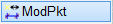
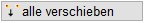

")
")
Durch das Löschen von Linien und Kreisen kann es vorkommen, dass Maßkettenpunkte auf der Zeichnung ohne offensichtlichen Elementbezug zurückbleiben.
Diese Punkte können mit dieser Funktion entfernt oder auf die zugehörige Maßkette verschoben werden.
So wird's gemacht:
§Wählen Sie aus den folgenden Funktionen, wie Sie die Maßkettenpunkte modifizieren möchten. [Welche Maßkette].
Einzelne Punkte löschen. §Klicken Sie die Maßkette an, in der Maßkettenpunkte gelöscht werden sollen. Es werden alle Punkte markiert, die zu der angeklickten Maßkette gehören. §Klicken Sie die vermaßten Punkte an, die nicht mehr in der Maßkette enthalten sein sollen. [Welche Maßkettenpunkte löschen]. -Jeder angeklickte Punkt wird aus der Auswahl entfernt. -Höhenkoten: Wird die Bezugshöhe ("Höhe 1. Linie" z. B. ± 1,15) entfernt, erhält die bei der Erstellung nachfolgend angeklickte Höhenlage diese Höhenangabe und wird zur neuen Bezugshöhe. Alle weiteren Höhenkoten werden entsprechend aktualisiert, wobei das Höhenkoten-Symbol erhalten bleibt. §Schließen Sie mit Rechtsklick ab. Die Maßkette wird aktualisiert. |
|
 |
Alle Punkte auf Maßkettenhöhe verschieben. Beim Auslagern von Teilzeichnungen müssen alle Elemente einer Maßkette eingerahmt werden, damit diese auf der neuen Zeichnung erscheint. Um alle Maßkettenpunkte inkl. der Maßkettenlinien und Texte einfach zu finden, können mit dieser Funktion alle zugehörigen Punkte auf die Grundlinie der Maßkette verschoben werden. §Klicken Sie die Maßkette an, deren Maßkettenpunkte auf die Maßlinie verschoben werden sollen. Die Maßkettenpunkte werden auf die Grundlinie der Maßkette verschoben. |
Um Ergänzungstexte neu zuzuordnen
Ergänzungstexte, die zu einem Maß gehören, das neu berechnet wird, müssen neu zugeordnet werden.
Der Dialog Höhentexte zuordnen wird auch nach [Konst1 | Dehnen], [Konst2 | Drehen], [Konst1 | FenÄnd → löschen mit Maßkettenpunkten] usw. geöffnet.

Jedes einzelne Maß der Maßkette wird nacheinander von links nach rechts markiert. Der aktuelle Maßkettentext wird im Dialog angeschrieben.
In der Tabelle stehen die Ergänzungstexte, die neu zugeordnet werden müssen, ebenfalls in der Reihenfolge von links nach rechts.
Um einen Text dem markierten Maß zuzuordnen, klicken Sie den Text an.
Zoomfaktor
Mit dem Schieberegler kann der Zoomausschnitt vergrößert oder verkleinert werden.
Drehen Sie das Mausrad nach vorne zum Verkleinern, bzw. nach hinten zum Vergrößern. Vorher muss der Regler markiert werden.
Der Zoomausschnitt ist auf das Bezugsmaß fokussiert.
Vorheriges Maß
Klicken Sie auf diese Schaltfläche, um ein Maß zurückzugehen.
Ist eine Maßzahl markiert, zu der ein Höhentext gehört, klicken Sie in der Tabelle auf den entsprechenden Eintrag.
Nächstes Maß
Drücken Sie auf diese Schaltfläche, um die nächste Maßzahl zu markieren oder klicken Sie den Eintrag in der Tabelle an, der zu dem markierten Maß gehört.
Fertig
Der Dialog wird geschlossen. Befinden sich noch Texte in der Tabelle, werden diese verworfen.
Abbrechen
Die gesamte Aktion (Maßkette ändern bzw. generieren) wird abgebrochen.
Die angeklickte Maßkette wird wieder im ursprünglichen Zustand angezeigt.
Zugehörige Referenzen: